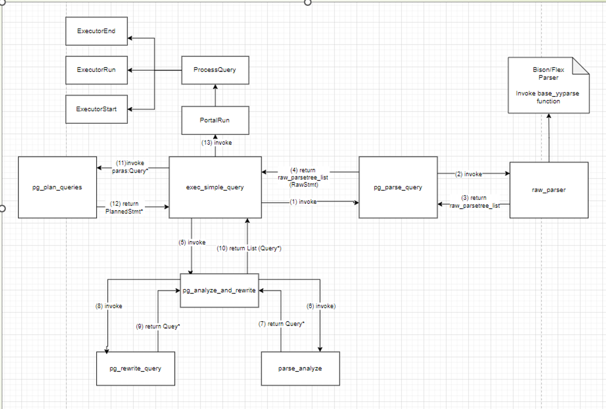
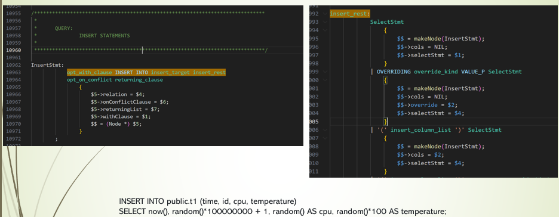
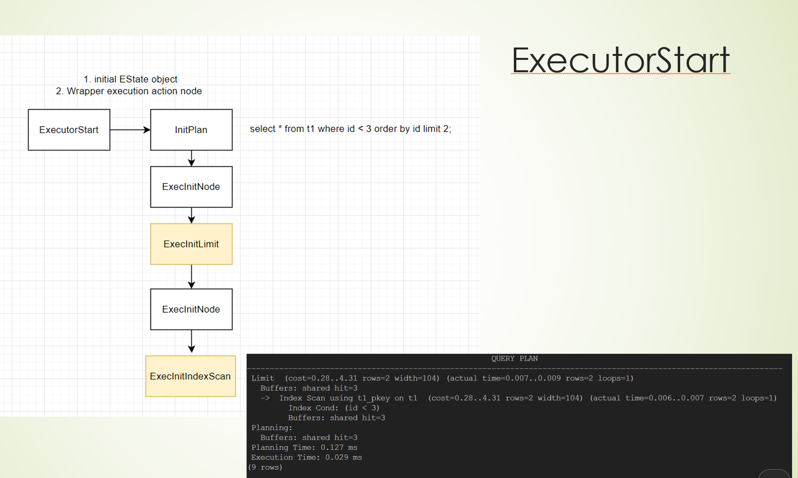
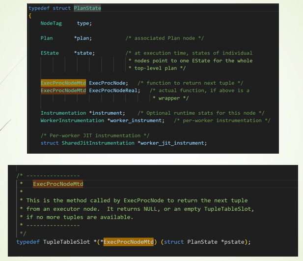
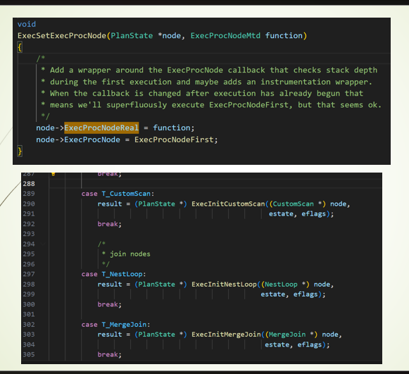
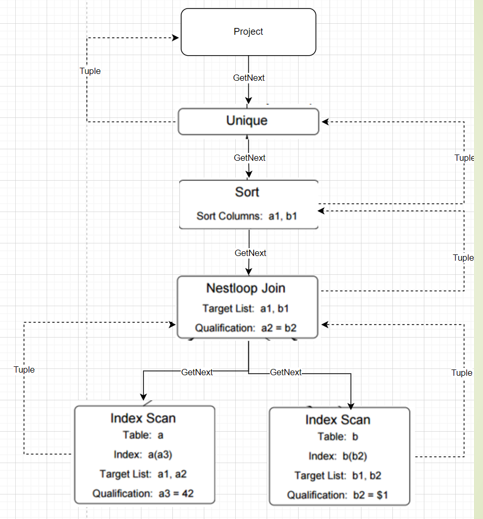
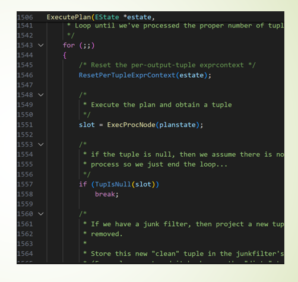
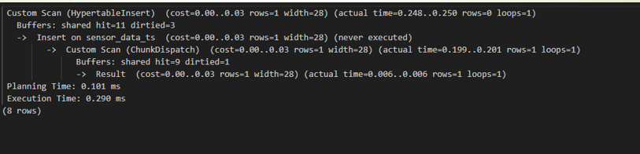
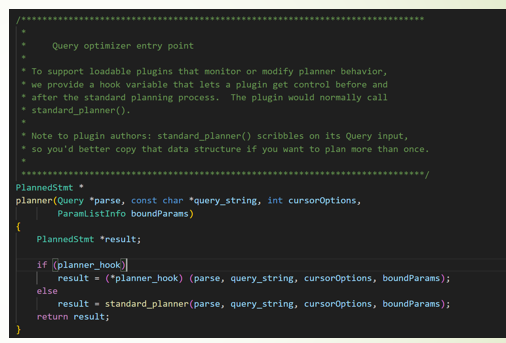

介紹 PostgreSQL 從 SQL parsing 到 hook 機制、MemoryContext 與 Rust ownership 的接合,並透過 redis_fdw_rs 實際示範 pgrx 的開發流程。
石秉修 · Support Escalation Engineer @ Microsoft
Parser → Analyzer → Rewriter → Planner → Executor,以及 hook 怎麼介入
三件套、能掛點的擴充面 (hook / bgworker / FDW / index AM)
解決 C extension 的痛點:ABI、_PG_init、型別對映,一個 cargo command 全包
palloc + MemoryContext × Rust ownership,pgrx 怎麼接合
用 pgrx 寫 extension 的收益與痛點,什麼時候不適合
FDW 即「結構化 hook」,架構拆解 + live demo

exec_simple_query 是 query 處理的進入點,把 SQL 字串依序送進 parser、analyzer、planner、executor 四個階段。Parser 與 analyzer 階段 PG 視為核心不開放;planner 與 executor 對應的呼叫則透過全域函式指標(planner_hook 等)讓 extension 可在 _PG_init 替換,後面幾頁會展開。

左半是 src/backend/parser/gram.y 的 InsertStmt 文法規則;右半是 insert_rest 的子規則(處理 SelectStmt / OVERRIDING / 欄位列表)。下方是真正會被解析的 SQL。
每條規則右邊的 { $$ = makeNode(InsertStmt); $5->relation = $4; ... } 就是「語法 match 成功時要建哪個 Node、怎麼填欄位」。$N 對應規則第 N 個 token / sub-rule。
輸入: SQL 字串
輸出: List<RawStmt>
輸入: RawStmt
輸出: Query (帶 oid)

範例 query SELECT * FROM t1 WHERE id<3 ORDER BY id LIMIT 2 的 plan tree 是「Limit → IndexScan」。ExecutorStart 從上往下遞迴,每個節點都呼一次 ExecInitNode,分派到對應的 ExecInitLimit / ExecInitIndexScan。EXPLAIN 的縮排深度 = 這個遞迴深度。
| Plan | ExecInit* |
|---|---|
| Limit | ExecInitLimit |
| Sort | ExecInitSort |
| IndexScan | ExecInitIndexScan |
| SeqScan | ExecInitSeqScan |
| HashJoin | ExecInitHashJoin |
| ForeignScan | ExecInitForeignScan ← FDW |

每個節點實作成 TupleTableSlot *(*)(PlanState *):回下一筆 tuple,沒有更多時回 NULL 或空 slot, 這是 volcano model 的核心 contract。
Wrapper / Real 拆兩層讓 instrument hook、JIT、parallel worker 等功能可以攔在 wrapper 上,核心節點實作完全不用知道誰在量它,職責分離。

把使用者傳進來的 function(節點實作)分別存到兩個欄位:
註解寫得清楚:第一次執行時 wrapper 才需要做 stack-depth 檢查、initialize instrumentation;之後 ExecProcNode 會被換成更簡單的版本(ExecProcNodeInstr 或直接 ExecProcNodeReal),減少每 tuple 的 overhead。
這就是 function pointer dispatch 的範例:plan tree 中每種 node type 對應一個 init 函式,init 內把實際取 tuple 的邏輯掛到 PlanState 上。Custom Scan / FDW 的 hook 機制,就是延續這個 pattern, 自己提供一組 ExecProcNode 實作。

for(;;) 反覆呼 ExecProcNode(planstate);每圈先 ResetPerTupleExprContext 釋放上一輪暫存,拿到 NULL tuple 就結束。
每個 PlanState 透過 ExecProcNode 向下層拉一筆 tuple。Limit → Sort → SeqScan/IndexScan 一層層 GetNext,一筆 tuple 從葉子回到根節點。
ExecProcNode 是 wrapper(可帶 Instrumentation);ExecProcNodeReal 是該節點實際的 next-tuple 實作。包裝層讓 EXPLAIN ANALYZE 能在不改節點程式碼下測量每節點 cost。

每圈先 reset 一次 per-tuple memory context,expression evaluation 期間 palloc 出來的暫存自動清掉,不需逐筆 pfree, 後面 MemoryContext 章節會展開這個設計。
ExecutorRun 不直接走 plan tree, 它只反覆呼 ExecProcNode,讓 plan tree 自己以 pull-based 方式從根遞迴到葉子,每次取一筆 tuple。
ExecutorStart 用 ExecInitNode 從根遞迴下去把 plan tree 包成 PlanState tree;ExecutorEnd 用 ExecEndNode 反向把它一層層釋放。
不同節點型別有對應的 ExecEnd*:Limit / Sort / Hash / SeqScan / IndexScan / ForeignScan。FDW 在這裡呼叫 EndForeignScan 釋放連線、buffer。
遞迴結束後,FreeExecutorState 釋放 EState、tuple slots、ExprContext 等執行期物件。整段 query 的 ExecutorState memory context 被刪除。

普通 INSERT 只會看到 Insert on …。TimescaleDB 包成兩層 Custom Scan:HypertableInsert 在外層接 row、ChunkDispatch 在內層分派到正確 time chunk。括號裡的 cost / rows / loops 跟內建節點一樣,planner 視為一級公民。

全域函式指標,預設指向 standard_planner()。Extension 在 _PG_init() 替換它,就能在每個 query 規劃時介入。
三個檔案、一個起點函式、N 個可掛點, 這就是擴充 PostgreSQL 的全部。
my_ext.control
告訴 PostgreSQL「我是誰、版本多少、要不要被 superuser 安裝」
my_ext--0.1.sql
CREATE EXTENSION 時實際被執行的 DDL
my_ext.so
編譯出來的共享函式庫;PostgreSQL dlopen() 後找到 _PG_init
不只是「Rust binding」它是一整套包含 build、test、type mapping、SQL 自動產生的開發環境。
用 C 寫 PostgreSQL extension 的痛分兩類:PG backend 帶來的(ABI),以及 C 語言本身的(工具鏈 / 寫法 / 缺乏型別安全)。
PG 每個 major version 動 ABI,同一份 .so 不能跨版本;internal API 沒 stability guarantee。
多版本支援 = #ifdef 地獄
先要 pg_config 找到 headers / lib,還要對應的 postgresql-server-dev 套件,各 distro 路徑不一;CI 上每個 PG 版本都要重新裝一次。
Linux · macOS · Windows 各自踩雷
PGXS 約定俗成的目錄結構 + control 檔 + sql 檔 + 版本升級 script,新手不熟就卡關;build / install / test / clean 步驟分散多處。
Makefile 是隱性的學習成本
每個 UDF 都要寫 PG_FUNCTION_INFO_V1 + PG_GETARG_* + PG_RETURN_*;泛型靠 macro,生命週期、null 處理、字串編碼全靠人工。
沒套件管理、沒 lint、沒 fmt
pgrx 是 PostgreSQL extension 的 Rust 開發框架,把 PostgreSQL 的 C API 用 bindgen 包成安全的 Rust 介面,加上一整套 cargo 工具鏈。
cargo-pgrx 在編譯時跑 bindgen 把 PG headers 轉成 raw FFI,再由 pgrx 套上安全 wrapper,最後產生 .so + .control + .sql 三件套。
同一個取 datum 的動作,從 C → pg_sys raw FFI → pgrx 安全 API,逐層抽象。
產生 PG 載入時的 magic block,版本握手
註冊 UDF + 自動推導型別、自動產 SQL
FFI 邊界 panic ↔ ereport 雙向轉譯
同份原始碼以 features 編 PG 14–18 多版本
PostgreSQL load 共享庫時,先檢查一個 magic 結構:版本號、變數大小、locale...只要不合就拒載入。
每個 backend 第一次 load .so 時被呼叫一次,適合做:
7 行 → 3 行,NULL 由 Option 處理。
| Rust | PostgreSQL |
|---|---|
| i16 / i32 / i64 | int2 / int4 / int8 |
| f32 / f64 | real / double precision |
| String / &str | text |
| Vec<T> | T[] (array) |
| Option<T> | NULL handling |
| pgrx::JsonB | jsonb |
| pgrx::Date / Timestamp | date / timestamp |
| pgrx::Uuid | uuid |
| SetOfIterator<T> | SETOF T (SRF) |
完整型別對照與自訂 type 範例:github.com/pgcentralfoundation/pgrx · docs.rs/pgrx;也支援 numeric、timestamptz、interval、inet、bytea、range、composite 等。
i32/i64/f64/String/Vec/Option/Date/Timestamp/JSON/UUID 全自動,不寫 input/output func
Spi::run() / Spi::get_one();直接從 Rust 跑 SQL
用 SetOfIterator 或 TableIterator,自動接 PG 的 SRF 協議
#[pg_trigger] 自動產生 trigger function
planner / executor / utility / ProcessUtility, 全部可掛
BackgroundWorkerBuilder 一行啟動常駐進程
supabase-wrappers 或自實作 FdwRoutine
實作 PostgresType trait,自動產 CREATE TYPE
B-tree / hash 自動;GIN / GiST / SP-GiST 需手寫
#[pg_aggregate] declarative
註冊自訂參數,跟 postgresql.conf 整合
共享記憶體 / 跨 backend 同步
PG 有自己的 region-based 記憶體系統,Rust 有 ownership,pgrx 要在兩者之間搭橋。
不用 malloc/free,而是用 palloc/pfree,所有分配都掛在 CurrentMemoryContext 上, 一棵以 TopMemoryContext 為根的樹。
不用一個個 free,Reset/Delete 整棵子樹立刻歸還,連帶釋放所有子 context。
編譯期 borrow checker 保證:
不會 leak · 不會 double-free · 不會 use-after-free
PG 的指標通常由 MemoryContext 管理,生命週期跟著 context 走;但 Rust 看到 raw pointer 不知道誰是 owner。
↳ pgrx 必須在兩個模型之間 翻譯所有權, 這就是 PgBox<T, A> 的工作。
PG 用 MemoryContext 樹批次釋放,Rust 靠 Drop 個別釋放。pgrx 提供兩支 API 把這兩種模型接起來:PgBox 在型別層宣告所有權歸誰,leak_and_drop_on_delete 把 Drop 嫁接到 PG context 結束的時點。
兩者同時發生會造成 UB:longjmp 跳過 Rust drop = leak;panic 跳過 PG 的 elog cleanup = corrupt state
pgrx 在所有 FFI 邊界自動套一層 guard,做兩件事:
遇到 ereport(ERROR) 時,siglongjmp 直接跳回最近的 PG_TRY。stack 上的所有 frame 被「跳過」,不跑任何清理, 全靠 MemoryContext 在 PG_CATCH 整批 reset。
panic!() 觸發 stack unwinding, runtime 逐 frame 倒退,每個 frame 上 owned value 呼叫 Drop:檔案關閉、connection 歸還、Vec 釋放, 最後在 catch_unwind 停下。
PG ereport(ERROR) 一發 siglongjmp 跳過 Rust 函式, Drop 不跑, File 不關、Connection 不還、Vec leak。
Rust panic! 沒被攔下就回 C,PG 的 MemoryContextSwitchTo 還沒切回上層, backend 全域狀態 UB。
評估 pgrx 的限制與適用場景,跟了解它的能力同樣重要。
① 團隊沒有 Rust 經驗,且只寫一個小 UDF, 學習成本不划算
② 需要追 PG master branch 或某個 minor version, pgrx 只支援已 release 的主版本
③ 主要工作是 GIN/GiST 自訂索引, 自動 SQL 生成不適用,優勢縮水
把 Redis 接到 PostgreSQL,用 SQL 查 hash / list / set / zset, 一個 Rust + pgrx 寫出來的 FDW。
「我給你一個函式指標,你想做什麼自己處理。」
PG 給你一張 callback 清單 (FdwRoutine),你只要把每個 callback 填好,PG 自動接管 plan / execute / DML。
所有 SQL 都走 Parse → Plan → Execute → Cleanup。FDW callback 在 Plan 與 Execute 階段被觸發。
RelSize 取完統計立即釋放連線;Begin 重新從 pool 取得,Iterate 每次回一個 tuple,Shutdown 歸還連線。
兩表同 server 時,GetForeignJoinPaths 提取 join columns;首次 Iterate 才 fetch 兩表並執行記憶體 hash join。
PlanForeignModify 先建連線、決定 table type;Exec*(× N rows)逐筆下 Redis 命令,batch 模式走 BatchInsert pipeline。
TRUNCATE 不走 Planning,直接呼叫 ExecForeignTruncate;EXPLAIN 只跑 Planning,加 ANALYZE 才接著跑 Execute。
資料量 N 個 field → O(N) 網路傳輸,大表更慘。
FDW 從 plan 抽出 quals,翻成 Redis-native 命令。
| Type | SQL Predicate | Redis Command | 複雜度 |
|---|---|---|---|
| Hash | field = 'x' | HGET key x | O(1) |
| Hash | field IN ('a','b','c') | HMGET key a b c | O(N) — N 是 IN 集合大小 |
| Set | EXISTS … WHERE member = 'x' | SISMEMBER key x | O(1) |
| String | key = 'foo' (multi-key) | GET foo | O(1) |
| String | key IN ('a','b') | MGET a b | O(N) |
| String | key LIKE '555%' | SCAN MATCH 555* | O(N) — 但 cursor 分批 |
| ZSet | score >= ?, score <= ? | ZRANGEBYSCORE | O(log N + M) |
| — | LIMIT n | 傳給對應的 Range / Iter 命令 | 提早結束 |
R2D2 池化,可調 pool_max_size、min_idle、connection_timeout、max_lifetime、idle_timeout。Planning 階段短借短還。
多節點 host_port '7001,7002,7003',自動 sharding + failover。MOVED/ASK redirect 透明處理。
URI scheme rediss:// 啟用 rustls,fragment #insecure 跳過憑證驗證(dev 用)。無 OpenSSL 依賴。
自實作 FDW VALIDATOR, CREATE FOREIGN TABLE 當下就驗 options,不等到 query 才爆。
表級 ttl '3600' 預設過期;加 ttl bigint 虛擬欄位可逐 row 覆寫,SELECT 看剩餘秒數。
table_key_prefix 'user:*' 自動轉 SCAN MATCH 模式;key 變第一個 column。
實作 ExecForeignBatchInsert,多 row INSERT 自動 pipeline 給 Redis,可調 batch_size。
單 key → UNLINK;multi-key 模式 → SCAN + UNLINK 批次清。
實作 analyze_foreign_table,planner 拿到真實 cardinality(HLEN/SCARD/ZCARD/LLEN),選對 join 策略。
大量載入走 begin_foreign_insert,可用 COPY tbl FROM stdin 或 INSERT … SELECT。
同 server 兩張 redis 表 INNER/LEFT JOIN, 單連線抓兩邊 + in-memory hash join + OOM 守門 (500K rows)。
github.com/isdaniel/redis_fdw_rs
apt repo 有 PG 14–18 的 prebuilt deb,Ubuntu 22/24。
從 planner_hook、Executor*_hook 到每個 PlanState 上的 ExecProcNode, 整個 backend 是一張函式指標表。看懂這件事,後面所有 hook、Custom Scan、FDW 都是同一個 pattern。
它真正的價值在於把 C extension 的四個痛點(ABI / 環境 / Makefile / 樣板)一次處理掉, build / test / multi-version 全收進 cargo pgrx。#[pg_extern] 同時搞定 SQL、型別、NULL、測試。
PG 用 MemoryContext 批次釋放、Rust 用 Drop 個別釋放。PgBox<T, A> 在編譯期表達所有權,leak_and_drop_on_delete 在執行期把 Drop 嵌進 context callback,#[pg_guard] 在 FFI 邊界翻譯 longjmp ↔ panic, 三件套讓兩種模型可以一起跑。
普通 hook 給你一個指標自己發揮;FDW 給你一張 FdwRoutine vtable,實作 callback 後 PG 接管 plan / execute / DML。redis_fdw_rs 就是把 §1–§5 的能力整合成一個能裝進 production 的 extension(pool、TLS、cluster、pushdown、JOIN、batch insert 都用 pgrx 寫得出來)。
pgrx 處理掉 Rust 那一半的雷,但 MemoryContext 怎麼選、longjmp 何時觸發、ExecutorState 何時消失 還是要你懂。
適合:有 Rust 經驗 + 想做 production extension 或想學 PG 內部, 投資收益率最高,錯誤訊息也比 C 友善。
不適合:沒 Rust 經驗 + 只寫一個小 UDF;或要追 PG master / 特定 minor version。